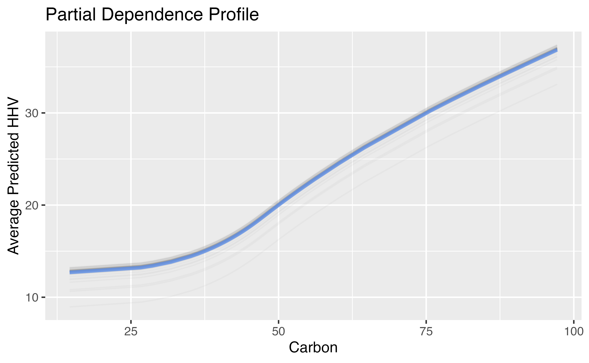
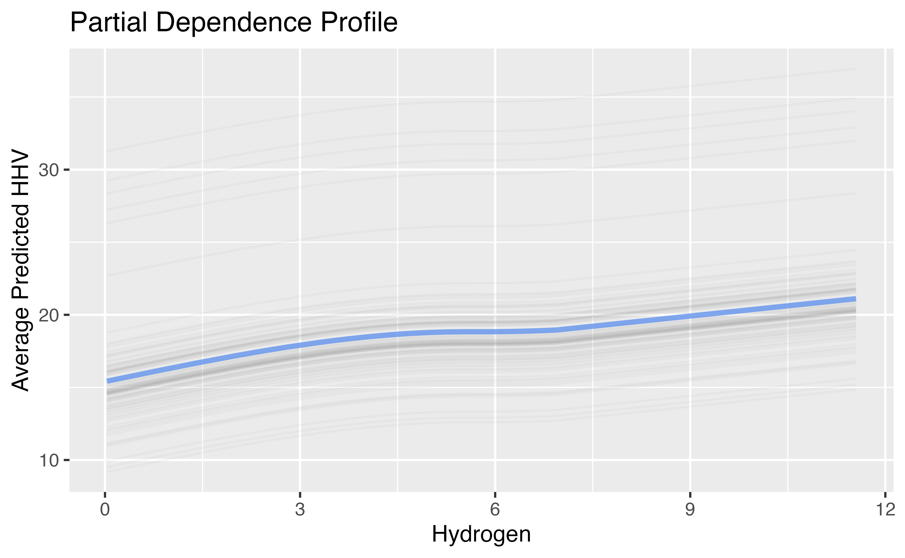
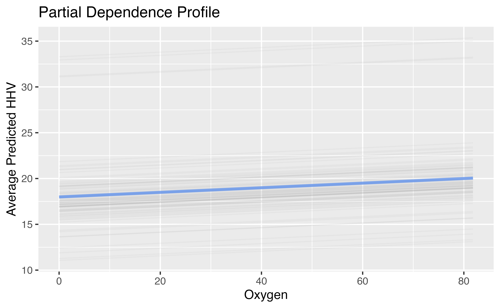
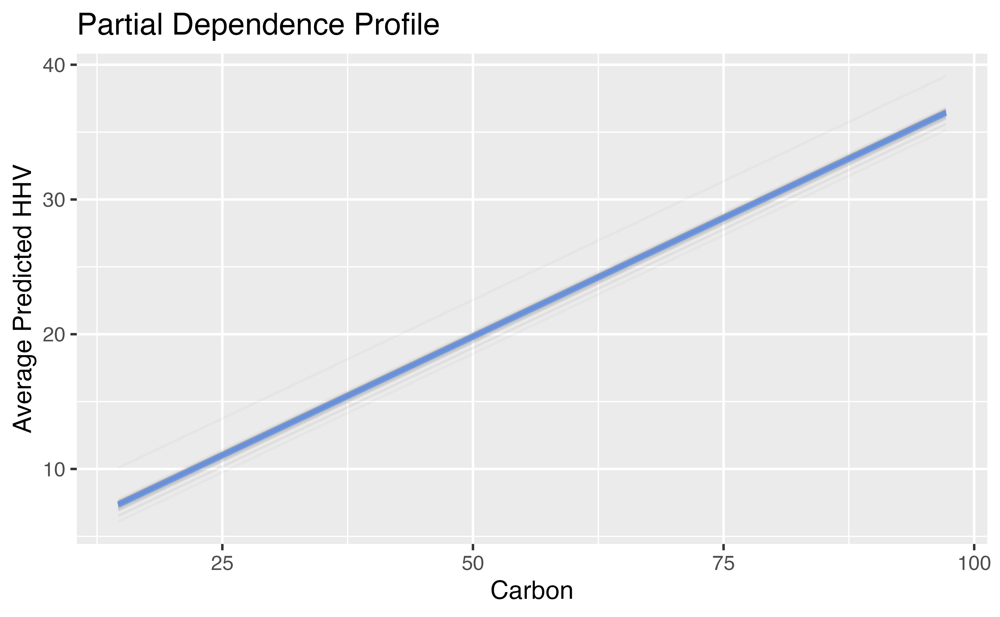

Non-linearity in R
Lucy D’Agostino McGowan
Natural Cubic Splines
- Variables you would like to fit using a natural (restricted) cubic spline can be set using the
step_ns()function in your recipe - By default, this will create a natural spline with two degrees of freedom (in other words, a spline with three knots: 2 boundary knots and one internal knot)
- Behind the scenes, this is using the
splines::nsfunction
Natural Cubic Splines Example
The dataset consists of different biomass fuels characterized by the amount of certain molecules and the corresponding “higher heating value” (HHV). We are going to try to predict HHV based on the quantity 5 molecules.
Natural Cubic Splines Example
# A tibble: 536 × 8
oxygen nitrogen sulfur HHV carbon_ns_1 carbon_ns_2 hydrogen_ns_1 hydrogen…¹
<dbl> <dbl> <dbl> <dbl> <dbl> <dbl> <dbl> <dbl>
1 42.9 0.41 0 20.0 0.549 -0.220 0.561 -0.220
2 41.3 0.2 0 19.2 0.547 -0.222 0.564 -0.216
3 46.2 0.11 0.02 18.3 0.536 -0.231 0.567 -0.210
4 35.6 3.3 0.16 18.2 0.512 -0.239 0.530 -0.248
5 40.7 1 0.02 18.4 0.527 -0.235 0.552 -0.233
6 40.2 2.04 0.1 18.5 0.515 -0.238 0.565 -0.213
7 38.2 2.68 0.2 18.7 0.530 -0.233 0.572 -0.196
8 39.7 1.7 0.2 18.3 0.518 -0.238 0.564 -0.216
9 40.9 0.8 0 18.6 0.543 -0.226 0.556 -0.228
10 40 1.2 0.1 18.9 0.530 -0.234 0.569 -0.203
# … with 526 more rows, and abbreviated variable name ¹hydrogen_ns_2Natural Cubic Splines Example
Let’s increase the degree of the spline
library(tidymodels)
rec_splines <- recipe(
HHV ~ carbon + hydrogen + oxygen + nitrogen + sulfur,
data = biomass) |>
step_ns(carbon, hydrogen,
deg_free = 3)
expanded_biomass <- prep(rec_splines, biomass) |>
bake(biomass)
expanded_biomass# A tibble: 536 × 10
oxygen nitrogen sulfur HHV carbon…¹ carbo…² carbo…³ hydro…⁴ hydro…⁵ hydro…⁶
<dbl> <dbl> <dbl> <dbl> <dbl> <dbl> <dbl> <dbl> <dbl> <dbl>
1 42.9 0.41 0 20.0 0.221 0.536 -0.272 0.228 0.534 -0.279
2 41.3 0.2 0 19.2 0.210 0.540 -0.275 0.245 0.528 -0.275
3 46.2 0.11 0.02 18.3 0.144 0.564 -0.290 0.274 0.518 -0.269
4 35.6 3.3 0.16 18.2 0.0361 0.597 -0.308 0.0529 0.582 -0.304
5 40.7 1 0.02 18.4 0.101 0.579 -0.298 0.159 0.556 -0.291
6 40.2 2.04 0.1 18.5 0.0472 0.595 -0.307 0.260 0.523 -0.272
7 38.2 2.68 0.2 18.7 0.118 0.573 -0.296 0.325 0.499 -0.256
8 39.7 1.7 0.2 18.3 0.0586 0.591 -0.305 0.245 0.528 -0.275
9 40.9 0.8 0 18.6 0.183 0.550 -0.282 0.187 0.547 -0.286
10 40 1.2 0.1 18.9 0.115 0.574 -0.296 0.302 0.508 -0.262
# … with 526 more rows, and abbreviated variable names ¹carbon_ns_1,
# ²carbon_ns_2, ³carbon_ns_3, ⁴hydrogen_ns_1, ⁵hydrogen_ns_2, ⁶hydrogen_ns_3What is happening behind the scenes?
- The default “boundary knots” are the extremes of the data
For a natural cubic spline, what happens beyond the “boundary knots”?
What is happening behind the scenes?
The default interior knots are set as follows:
deg_free |
# of interior knots | quantile |
|---|---|---|
| 2 | 1 | 50% |
| 3 | 2 | 33.3%, 66.7% |
| 4 | 3 | 25%, 50%, 75% |
| 5 | 4 | 20%, 40%, 60%, 80% |
| 6 | 5 | 16.7%, 33.3%, 50%, 66.7%, 83.3% |
Natural Cubic Splines Example
wf <- workflow() |>
add_recipe(rec_splines) |>
add_model(linear_reg())
fit_splines <- fit(wf, data = biomass)
tidy(fit_splines)# A tibble: 10 × 5
term estimate std.error statistic p.value
<chr> <dbl> <dbl> <dbl> <dbl>
1 (Intercept) 8.30 0.890 9.32 3.07e- 19
2 oxygen 0.0252 0.00919 2.74 6.39e- 3
3 nitrogen 0.0307 0.0558 0.550 5.82e- 1
4 sulfur 0.251 0.134 1.87 6.14e- 2
5 carbon_ns_1 14.1 0.546 25.8 1.51e- 95
6 carbon_ns_2 19.8 1.54 12.9 2.97e- 33
7 carbon_ns_3 23.9 0.721 33.2 2.67e-131
8 hydrogen_ns_1 1.84 0.519 3.54 4.36e- 4
9 hydrogen_ns_2 7.70 1.30 5.91 6.01e- 9
10 hydrogen_ns_3 4.04 1.26 3.21 1.43e- 3Natural Cubic Splines Example
Aside: ggplot2 helper function
You don’t need to know what is going on here and I will provide this for your labs!
ggplot_pdp <- function(obj, x) {
p <-
as_tibble(obj$agr_profiles) %>%
mutate(`_label_` = stringr::str_remove(`_label_`, "^[^_]*_")) %>%
ggplot(aes(`_x_`, `_yhat_`)) +
geom_line(data = as_tibble(obj$cp_profiles),
aes(x = {{ x }}, group = `_ids_`),
linewidth = 0.5, alpha = 0.05, color = "gray50")
num_colors <- n_distinct(obj$agr_profiles$`_label_`)
if (num_colors > 1) {
p <- p + geom_line(aes(color = `_label_`), linewidth = 1.2, alpha = 0.8)
} else {
p <- p + geom_line(color = "cornflower blue", linewidth = 1.2, alpha = 0.8)
}
p
}Natural Cubic Splines Example
Natural Cubic Splines Example
Natural Cubic Splines Example
A bit more on the “workflow”
- The
workflow()allows us to iteratively update our model without having to change the recipe after tuning. - We can use a few helper functions:
select_bestandfinalize_workflow
A bit more on the “workflow”
recipe_splines <- recipe(
HHV ~ carbon + hydrogen + oxygen + nitrogen + sulfur,
data = biomass) |>
step_ns(carbon, hydrogen, deg_free = tune())
splines_wf <- workflow() |>
add_recipe(recipe_splines) |>
add_model(linear_reg())
cv <- vfold_cv(biomass)
splines_tuned <- tune_grid(
splines_wf,
cv
)
show_best(splines_tuned, "rmse")# A tibble: 5 × 7
deg_free .metric .estimator mean n std_err .config
<int> <chr> <chr> <dbl> <int> <dbl> <chr>
1 1 rmse standard 1.41 10 0.183 Preprocessor1_Model1
2 3 rmse standard 1.42 10 0.184 Preprocessor4_Model1
3 4 rmse standard 1.46 10 0.202 Preprocessor9_Model1
4 6 rmse standard 1.48 10 0.211 Preprocessor3_Model1
5 9 rmse standard 1.48 10 0.219 Preprocessor8_Model1How many degrees of freedom does the best model have?
A bit more on the “workflow”
best_params <- select_best(splines_tuned, "rmse")
splines_wf_final <- splines_wf |>
finalize_workflow(best_params)
final_fit <- fit(splines_wf_final,
data = biomass)
final_explainer <- explain_tidymodels(
final_fit,
data = dplyr::select(biomass, -HHV),
y = biomass$HHV,
verbose = FALSE
)
carbon_profile <- model_profile(
final_explainer,
variables = "carbon"
)A bit more on the “workflow”
ggplot_pdp(carbon_profile, carbon) +
labs(x = "Carbon",
y = "Average Predicted HHV",
title = "Partial Dependence Profile")